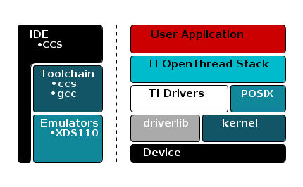
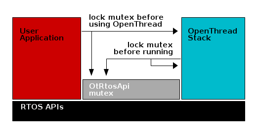

TI-OpenThread Stack Software Development Environment¶
TI’s royalty-free SimpleLink CC26x2 SDK is a complete software platform for developing applications that require low-power, security, reliability, and mesh networking. This kit is based on the SimpleLink CC26x2 ultra-low power wireless microcontroller unit (MCU). The CC26x2 device combines a 2.4 GHz RF transceiver with 352KB of in-system programmable memory, 80KB of SRAM, and a full range of peripherals. The CC26x2 device is centered on an ARM® Cortex®-M4F series processor, that executes the user application and stack code, and an autonomous radio core centered on an ARM Cortex-M0 processor, which handles all the low-level radio control. The sensor controller block provides additional flexibility by allowing autonomous data acquisition and control independent of the Cortex-M4F processor core, which further extends the low-power capabilities of the CC26x2 device.
TI-OpenThread Stack Description¶
Protocol Stack and Application Configurations¶
The below diagram shows the two different system architectures enabled by TI-OpenThread Stack.
- A single device is shown in the diagram below (left). The application and protocol stack are both implemented on the CC26x2 as a true single-chip solution. This configuration is the simplest and most common when using the CC26x2 for network devices. This configuration is the most cost-effective technique and provides the lowest-power performance.
- A network co-processor (NCP) is shown in the diagram below (right). The protocol stack runs on the CC26x2 while the application is executed on an external host processor. The application processor interfaces with the CC26x2 using the Spinel protocol over a serial universal asynchronous receiver/transmitter (UART) connection. The description of the Spinel interface is provided in the Spinel Protocol Specification. This configuration is useful for applications that must add wireless connectivity or peripheral applications, which execute on a host processor without the requirement to implement the complexities associated with a wireless networking protocol. In these cases, the application can be developed externally on a host processor while running TI-OpenThread Stack on the CC26x2, which provides ease of development and quickly adds Thread support and wireless connectivity to existing products.
{kind=link}
Solution Platform¶
This section describes the various components that are installed with the SimpleLink CC26x2 SDK, the directory structure of the protocol stack, and any tools required for development. The diagram below shows the TI-OpenThread Stack development system.
{kind=link}
The following components are included in the solution platform:
- Real-time operating system (RTOS) with the TI-RTOS ™ SYS/BIOS kernel, optimized power management support, and peripheral drivers.
- The driverLib provides a register abstraction layer that is used by software and drivers to control the CC26x2 MCU.
- Example applications make the beginning stages of development easier. Example applications are provided for the CC26x2 platform.
Directory Structure¶
The SimpleLink CC26x2 SDK directory structure is broken down into a few major directories at the root to allow easy differentiation between documentation, examples, kernel source, and other source code. From the root directory, the sub-directories are:
| docs: | Contains HTML and PDF documentation for the SimpleLink CC26x2 SDK. |
|---|---|
| examples: | Contains the example projects and example source for this SimpleLink CC26x2 SDK. |
| kernel: | Contains the source and build tools for the kernels supported by this SimpleLink CC26x2 SDK. |
| source: | Contains the source code for the larger components of the SimpleLink CC26x2 SDK. A more detailed description of this directory follows. |
| tools: | Scripts and definition files used by the SimpleLink CC26x2 SDK. Contains scripts referenced by the SimpleLink CC26x2 SDK documentation. |
The source directory is split into major categories based on where the source
code came from. All of the source code within the third_party directory
comes from vendors other than Texas Instruments. All of the source code within
the ti directory comes from Texas Instruments.
| third_party\openthread: | |
|---|---|
| Contains the TI-OpenThread Stack stack repository. | |
| ti\devices: | Contains the board support source code. |
| ti\display: | Contains the source code for the display libraries. |
| ti\drivers: | Contains the source code for the TI-RTOS drivers. |
| ti\grlib: | Contains the source code for the graphics libraries. |
| ti\mw: | Contains the source code for the middleware drivers. |
Projects¶
The TI-OpenThread Stack component within the SimpleLink CC26x2 SDK includes several projects.
CLI¶
The CLI projects can be used to interact with and explore the different aspects of the Thread protocol. The CLI interface OpenThread presents is also used for certification with the Thread Group test harness.
Four variants of the Command Line Interface examples exist for CC26x2 in the examples directory. Two for each device type [FTD, MTD], with one example for each toolchain [CCS, GCC]. These examples use the RTOS Posix APIs for execution of the application and stack tasks.
The CLI examples are a great place to start learning about Thread.
Consult the README.html in the imported example for usage directions.
NCP¶
The NCP projects are used to connect the TI-OpenThread Stack to a host processor. The Spinel interface OpenThread presents can be used with the OpenThread wpantund to create a bridge from a Linux host processor to the CC26x2.
Four variants of the Network CoProcessor example exist for CC26x2 in the examples directory. Two for each device type [FTD, MTD], with one example for each toolchain [CCS, GCC]. These examples use the RTOS Posix APIs for execution of the application and stack tasks.
Consult the README.html in the imported example for usage directions.
Door Lock¶
The door lock project presents a simple CoAP server representing a door lock. The door lock example is best used with a Sharp® Memory LCD BoosterPack, but also can be used with only the basic UART log.
Two variants of the door lock example exist for CC26x2 in the examples directory. One MTD example exists for each toolchain [CCS, GCC]. These examples use the RTOS Posix APIs for execution of the application and stack tasks. An image of a lock is displayed on the Sharp® Memory LCD BoosterPack for each state, locked or unlocked. Transitions are animated on the screen and logged over the UART connection.
Consult the README.html in the imported example for usage directions.
Shade¶
The shade project presents a simple CoAP server representing window blinds. The shade example is best used with a Sharp® Memory LCD BoosterPack, but also can be used with only the basic UART log.
Two variants of the shade example exist for CC26x2 in the examples directory. One MTD example exists for each toolchain [CCS, GCC]. These examples use the RTOS Posix APIs for execution of the application and stack tasks. An image of window blinds is displayed on the Sharp® Memory LCD BoosterPack for each state, open or drawn or closed. Transitions are animated on the screen and logged over the UART connection.
Consult the README.html in the imported example for usage directions.
Thermostat¶
The thermostat project presents a simple CoAP server representing a thermostat. The thermostat example is best used with a Sharp® Memory LCD BoosterPack, but also can be used with only the basic UART log.
Two variants of the thermostat example exist for CC26x2 in the examples directory. One FTD example exists for each toolchain [CCS, GCC]. These examples use the RTOS Posix APIs for execution of the application and stack tasks. The current temperature reported to the thermostat and set-point are displayed on the Sharp® Memory LCD BoosterPack. Transitions are animated on the screen and logged over the UART connection.
For full functionality, this example should be used with a border router and temperature sensor example.
Consult the README.html in the imported example for usage directions.
Temperature Sensor¶
The Temperature Sensor project presents a simple CoAP server and client representing an embedded temperature sensor.
Two variants of the temp sensor example exist for CC26x2 in the examples directory. One MTD example exists for each toolchain [CCS, GCC]. These examples use the RTOS Posix APIs for execution of the application and stack tasks. The current temperature read from the internal temp sensor is reported over the UART, presented by a CoAP server, and reported to a statically compile-time assigned address.
For full functionality, this example should be used with a border router and thermostat example.
Consult the README.html in the imported example for usage directions.
Border Router¶
The border router example is a basic implementation of a Thread Border Router. A Thread Border Router is a node on the Thread network that can bridge traffic from an IPv4 or IPv6 network to the Thread network and vice-versa. A Thread Border Router also enables off network commissioning of new devices into the Thread network.
Note
Specific documentation for the Border Router application can be
found in the ${border_router}/doc folder
FCC Testing Functionality¶
FCC and other similar RF regulatory bodies often require certain certifications to be fullfilled before a product is brought to market, even though the Thread protocol makes no such requirements. Therefore, it is desirable to have FCC testing functionality available in a Thread example project.
The diag (diagnostic) module in OpenThread provides a set of commands to manipulate the radio from within the OpenThread environment. The diag module is accesible from the OpenThread CLI application.
Mainly two FCC testing functionalities are supported: PER test functionality with SmartRF Studio compatibility, and test of continuous tone. The result of a PER test is calculated in the same fashion as SmartRF Studio, shown in Equation (1).
(1)¶![\text{Error Count} &= \text{CRC Error Count} + \text{Lost Packet Count}
\text{Packet Error Rate}[\%] &= \frac{\text{Error Count}}{\text{Packet Count} + \text{Error Count}} \times 100](../_images/math/438b53b787ee78fe49b12d52d38bb1bd8ed6366e.svg)
Test of Continuous Transmission¶
The API for starting and stopping a continuous transmission is on the following format:
diag transmit start <packet size> <interframe space> <transmit count>
diag transmit stop
Packet size specifies the payload of the packet in bytes, the interframe space specifies time beween each packet in milliseconds, and transmit count specifies the number of packets to send.
Note
If you want to receive and observe the transmitted packets, you can use an IEEE 802.15.4-capable LaunchPad with SmartRF Studio, configuring the device to the same channel in Packet RX mode expecting infinite packets. This is optional.
To start a test of continuous transmission with your Thread device, do the following:
Build and flash the cli_ftd example application.
Input the following commands in the UART CLI.
diag start diag channel 12 diag power 5 diag transmit start 100 30 500
(Optional) Observe the packets in SmartRF Studio.
Stop the transmission with the commands in the UART CLI.
diag transmit stop diag stop
After stopping the transmission, a test report is displayed with statistics over how many packets were transmitted.
Test of Continuous Reception¶
The API for starting and stopping a continuous transmission is one the following format:
diag receive start
diag receive stop
No additional parameters are required. Stopping the continuous reception will present a PER report of packets received.
Note
It is required to have a device sending out a continuous transmission on the same channel, while the continuous reception test is running to have any meaningful results. Either setup SmartRF Studio with an IEEE 802.15.4-capable LaunchPad in Packet TX mode on the same channel sending infinite packets, or see Test of Continuous Transmission.
To start a test of continuous reception with your Thread device, do the following:
Build and flash the cli_ftd example application.
Input the following cmmands in the UART CLI.
diag start diag channel 12 diag receive start
Start packet transmissions from your other device.
When satisfied, stop packet transmissions.
Stop the transmission with the commands in the UART CLI, observing the report.
diag receive stop diag stop
After stopping the reception, a test report is displayed with statistics over received packets, including PER.
Test of Continuous Tone¶
The API for starting and stopping a continuous tone is one the following format:
diag tone start
diag tone stop
No additional parameters are required. To observe the continuous tone, setup a Spectrum Analyzer near the DUT; or, setup SmartRF Studio in Continuous RX mode on the same channel.
To start a test of continuous tone with your Thread device, do the following:
Build and flash the cli_ftd example application.
Input the following cmmands in the UART CLI.
diag start diag channel 12 diag power 5 diag tone start
Observe the transmission over the air with the Spectrum Analizer or SmartRF Studio.
Stop the transmission with the commands in the UART CLI, observing the report.
diag tone stop diag stop
No test report is displayed after stopping the tone.
Useful CCS IDE Settings¶
The CCS provides a large number of configurable settings that can be used to customize the IDE and individual projects. The following examples do not alter the generated program code, but they can improve the developer’s experience when working with CCS projects. The CCS can reduce project compilation time by taking advantage of multiple processor cores on the development computer.
To use this feature, open the properties dialog by selecting Project →
Properties then selecting Build → Behavior and select Enable
parallel build, as shown in Figure 11..

Figure 11. Properties for cli example
CCS users can control the amount of information that is displayed in the
Console portion of the screen during project compilation and linking, ranging
from Verbose to Super quiet. To change this setting, open the preferences
dialog by selecting Window → Preferences and navigating to Code
Composer Studio → Build and select an entry from the Console
verbosity level drop-down, as shown in Figure 12.
Figure 12. Console Verbosity Level Preferences
Accessing Preprocessor Symbols¶
Throughout this document and in the source code, various C preprocessor symbols may need to be defined or modified at the project level. Preprocessor symbols (also known as Predefined Symbols) are used to enable and disable features and set operational values to be considered when the program is compiled. The preprocessor symbols are split between project specific preprocessor symbols and configuration header preprocessor symbols.
Project Specific Preprocessor Symbols¶
Configurations for a given example project are stored in CCS’s predefined symbols setting for that project.
In CCS, preprocessor symbols are accessed by opening the appropriate Project
Properties by right clicking on the project in the Project Explorer and
selecting Properties then navigating to CCS Build → ARM
Compiler → Predefined Symbols. To add, delete, or edit a
preprocessor symbol, use one of the icons shown in the red box in
Figure 13..
Figure 13. Predefined Symbols Pane
Configuration Header Preprocessor Symbols¶
Configuration for the OpenThread libraries is stored in the configuration header within the libopenthread project. These defines control certain features of the OpenThread stack itself.
In Figure 14. you can see the OpenThread header
for the cc2652 chip, ccs toolchain, and ftd device type. This configuration
file is linked with the highlighted cli_ftd_CC26X2_LAUNCHXL_tirtos_ccs
example project. These configuration headers are common across all projects
within the workspace that link to the library projects. These configuration
headers were generated from the OpenThread configuration step and modified to work
with the example applications.
Note
The configuration header associated with your project may be different. The name of the library project depends on the board, toolchain, and device type.

Figure 14. OpenThread configuration header
Software Architecture¶
The Application Architecture is split into two major sections, the OpenThread stack and the application logic. The OpenThread stack logic is executed within its own RTOS task. The application logic is executed in a separate RTOS task and controls the OpenThread stack execution.
OpenThread Stack Task Architecture¶
The OpenThread stack task handles instantiation of the OpenThread instance object and basic setup of the stack primatives. The task then spins in an infinite loop to processing OpenThread tasklets and the process functions of the OpenThread drivers.
The OpenThread stack manages a queue of tasks to be run called tasklets. These
tasklets are processed by the OpenThread stack task by the call to the
otTaskletsProcess(), this function processes the queued tasklets. Tasklets
are segments of code written in a non-blocking fashion.
The OpenThread stack task also processes the OpenThread platform drivers. These
are an adaptation layer betweeen OpenThread and the RTOS drivers. The process
functions for the OpenThread platform layer are handled by
PlatformProcessDrivers().
Application Task Architecture¶
The application task handles setup and execution of the application and execution and some management of the OpenThread stack. In contrast to the OpenThread Stack, the application task is written in a blocking manor. The application task is meant to execute for a short period of time, then block on an RTOS event or timer to allow the OpenThread stack time to execute.
The NCP and CLI applications are special example applications. The bulk of their code resides in a library within the OpenThread package. Those examples execute from OpenThread tasklets. The files built inside the example application project are only what is necessary to start those examples. The application task in these examples starts the respective tasklets and timers in OpenThread, then blocks in a timer loop to toggle the Red LED on CC26x2 Launchpad.
The CoAP examples setup the display and any necessary peripherals, then enter an infinite loop blocking on an RTOS events structure. The stack task or RTOS timers unblock the processing loop by posting the events to that structure. In this fashion the application task updates the display and internal data structures.
Application Stack Interface¶
For simplicity and ease of testing the OpenThread developers have chosen a single threaded design for their stack. This means that the OpenThread stack assumes singular access to its data structures. This poses a challenge in the Multi-Threaded RTOS. To remedy these access issues, a simple framework has been put in place for the CC26x2 examples. The usage of a recursive RTOS mutex is employed to ensure coherent access to the OpenThread APIs.
The API mutex is locked and unlocked through the OtRtosApi module within
the example project. The OpenThread Stack task locks the mutex before
processing the stack functionality, and un-locks the mutex immediately after.
An application should be expected to lock and un-lock the API mutex in much the
same fashion when calling an OpenThread API.
/* Process the OpenThread tasklets and driver functions. */
OtRtosApi_lock();
otTaskletsProcess(OtStack_instance);
PlatformProcessDrivers(OtStack_instance);
OtRtosApi_unlock();
OtRtosApi_lock();
otCliUartInit(instance);
OtRtosApi_unlock();
Here is a high level overview of the Application Stack interface.
Flash¶
The data and text segments of the final image are placed by the toolchain linker. The non-volatile storage used by the TI-OpenThread Stack is placed in the second and third to last page.
Memory Management (RAM)¶
Space for RAM is configured in the linker configuration file
System Stack¶
Dynamic Memory Allocation¶
A Note on Initializing RTOS Objects¶
Due to the limited size of the RTOS heap, TI strongly recommends that users construct and not create RTOS objects. To illustrate this recommendation, consider the difference between the Clock_construct() and Clock_create() functions. Listing 19. shows the definitions of these functions from the SYS/BIOS API.
// Allocate and initialize a new instance object and return its handle
Clock_Handle Clock_create(Clock_FuncPtr, UInt timeout, \
const Clock_params *params, Error_Block *eb);
// Initialize a new instance object inside the provided structure
Void Clock_construct(Clock_Struct *structP, Clock_FuncPtr clockFxn, \
UInt timeout, const Clock_Params *params);
By declaring a static Clock_Struct object and passing this object to
Clock_construct(), the .DATA section for the actual Clock_Struct is
used, not the limited RTOS heap. Conversely, Clock_create() causes the
RTOS to allocate Clock_Struct using the limited heap of the RTOS. As
much as possible, this method is how clocks and RTOS objects in general,
should be initialized throughout the project. If creating RTOS objects must
be used, the size of the RTOS heap may need to be adjusted in app.cfg.